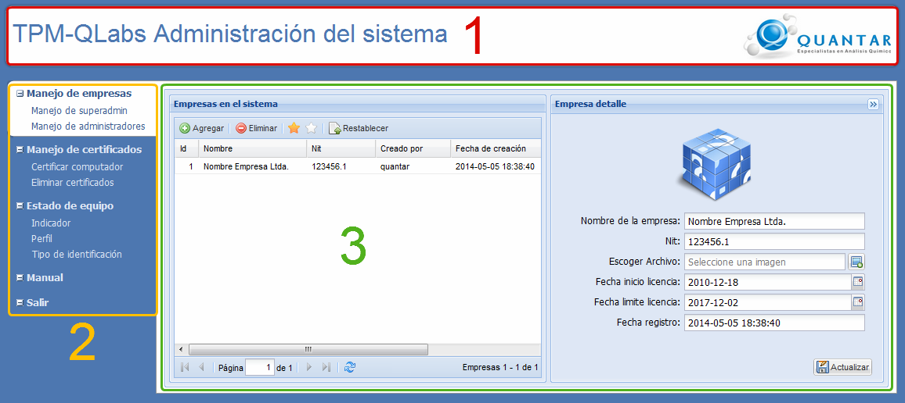

Figura 1. Pantalla principal del
súper administrador .
La interfaz del súper
administrador está compuesta de los siguientes componentes:
(1) Cabecera de
administración del sistema.
(2) Menú que
muestra las opciones a las cuales puede acceder el usuario súper
administrador.
(3) Área de trabajo que
muestra información según la opción del menú que seleccione el
usuario.